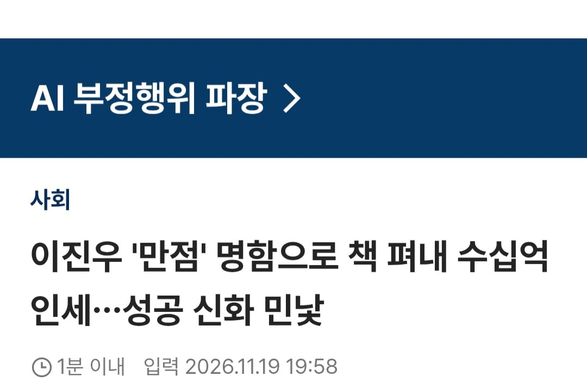
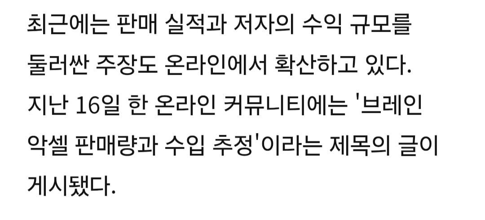
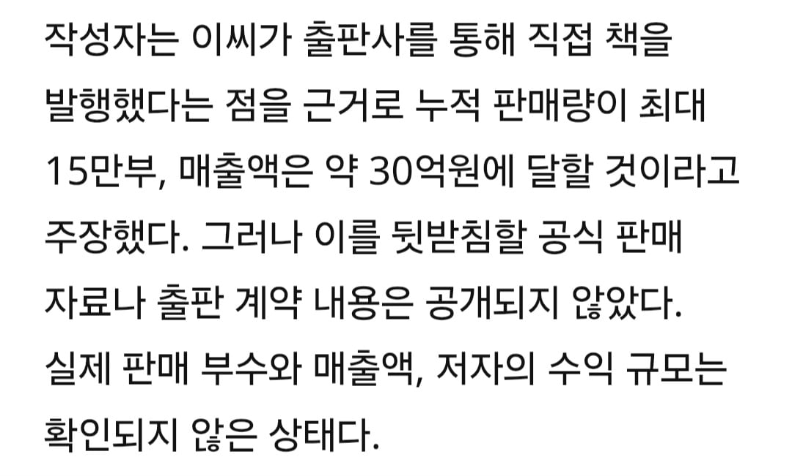
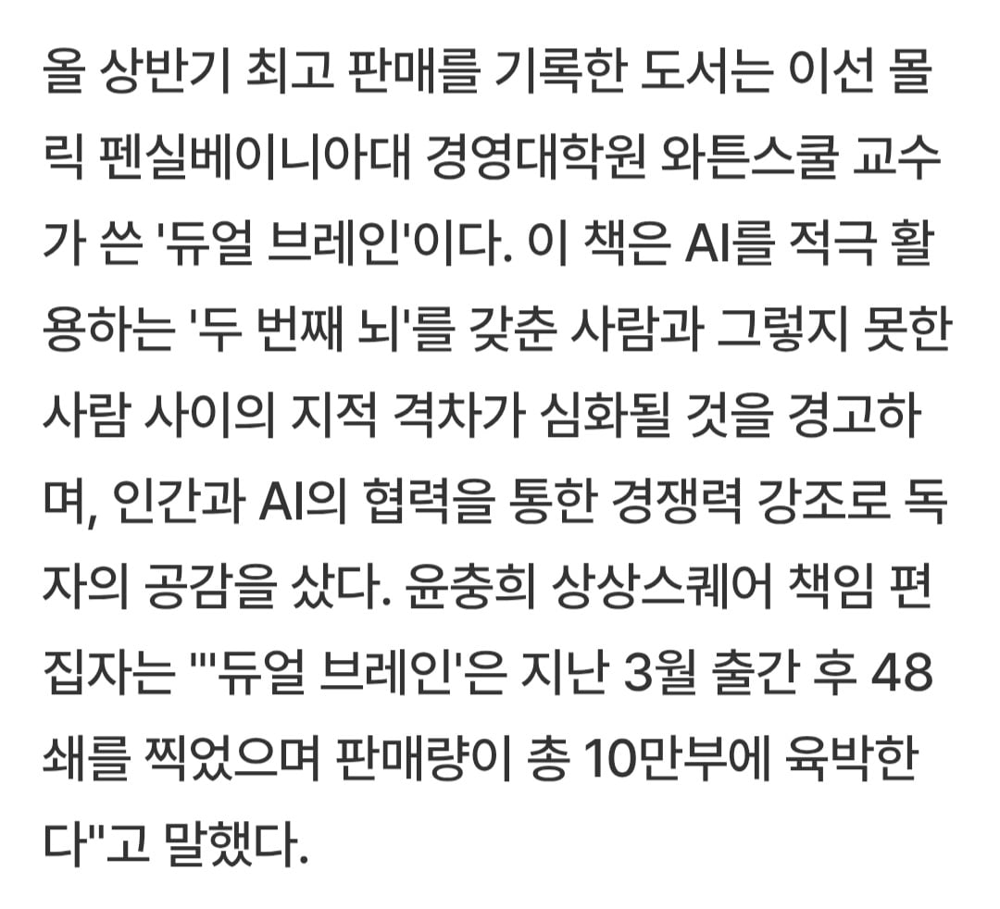
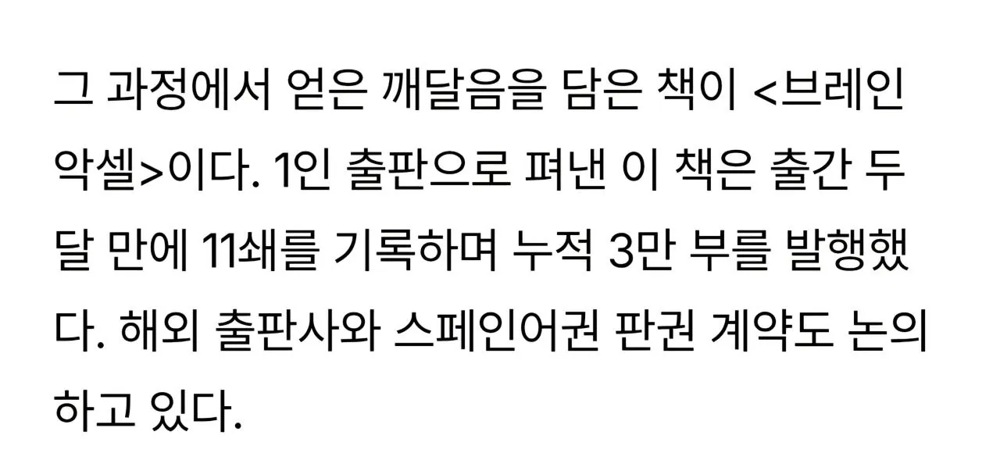

책 펴내 수십억을 벌었다 이런말이 도는데


출처가 그냥 커뮤니티 글임
누적 판매량이 최대 15만부 그럼 매출액이 30억이라는 가정

25년 자기계발서 1~2위 찍었던 듀얼 브레인이 48쇄 찍고 25년 8월 기사 기준으로 10만부를 못 찍었다 하는데 9/2일 나온 브레인 악셀이 지금시점에서 15만부?

논란 터지기 몇주전 기사보면 11쇄 누적 3만부 '발행'이라는 기사도 나옴
애초에 판매부수가 공개가 안되긴 했네